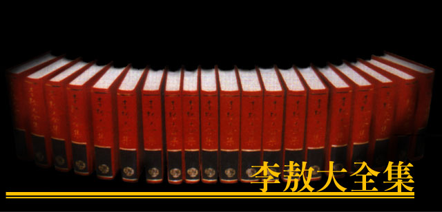

|

¡@ 這本「歷史與人像」包括十二篇文字，是我十一年來有關歷史人像的論文和劄記的一部分。其中最早的一篇是「杜威的教育思想及其他」是我十七歲（民國四十一年）高中一年級時候寫的；最晚的一篇是「李易安再嫁了嗎？」，是今年四月寫的，我已經二十八歲了。這十二篇文字的主題和寫法雖不盡相同，但都是環繞在歷史和人像上面的，所以我把它們收集在一起。 ¡@ 由於寫作時間前後相距十年以上，思想和方法的訓練也有不同的歷程，不成熟的部分和受傳統思路影響咎的遺跡，當然無法避免，我把它們全部保留了，為了它們究竟是我個人生命史上的重要過渡。 ¡@ 五十二年（一九六三 |